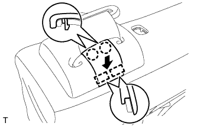
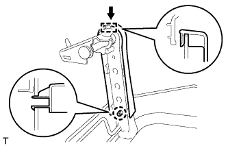

ЗАДНЕЕ СИДЕНЬЕ № 1 В СБОРЕ (складываемое вдвое раздельное сиденье 60/40 с правой стороны) > ПОВТОРНАЯ СБОРКА |
| 1. УСТАНОВИТЕ ЭЛЕМЕНТ ЗАЩИТЫ ПРАВОГО ЗАДНЕГО СИДЕНЬЯ № 1 |
Введите в зацепление захват, чтобы закрепить элемент защиты.
| 2. УСТАНОВИТЕ ЭЛЕМЕНТ ЗАЩИТЫ ЛЕВОГО ЗАДНЕГО СИДЕНЬЯ № 1 |
Введите в зацепление 2 захвата, чтобы закрепить защитную накладку.
| 3. УСТАНОВИТЕ ПРАВЫЙ 3-ТОЧЕЧНЫЙ РЕМЕНЬ БЕЗОПАСНОСТИ СИДЕНЬЯ № 1 В СБОРЕ |
 |
Совместите захваты с установочными отверстиями ремня безопасности и установите устройство вытяжения ремня безопасности, закрепив его гайкой и болтом, как показано на рисунке.
| *1 | Болт |
| *2 | Гайка |
| 4. УСТАНОВИТЕ НАПРАВЛЯЮЩУЮ ПЛЕЧЕВОГО КРЕПЛЕНИЯ РЕМНЯ ЗАДНЕГО СИДЕНЬЯ |
Введите в зацепление направляющую и захват, чтобы закрепить направляющую ремня.
| 5. УСТАНОВИТЕ КРАЕВОЕ УКРЕПЛЕНИЕ СПИНКИ ЗАДНЕГО СИДЕНЬЯ |
Установите защитный элемент на каркас спинки сиденья.
| 6. УСТАНОВИТЕ ОБИВКУ СПИНКИ ПРАВОГО РАЗДЕЛЬНОГО ЗАДНЕГО СИДЕНЬЯ |
Установите обивку на подушку спинки сиденья и закрепите ее новыми витковыми пружинами, используя щипцы для витковых пружин.
| *1 | Щипцы для витковых пружин |
| 7. УСТАНОВИТЕ ОБИВКУ СПИНКИ СИДЕНЬЯ ВМЕСТЕ С ПОДУШКОЙ |
 |
Подсоедините ремень безопасности к обивке спинки сиденья с подушкой.
Введите в зацепление крюк.
| *1 | Щипцы для витковых пружин |
| *2 | Крюк |
| *3 | Витковая пружина |
Используя щипцы для витковых пружин, закрепите обивку спинки сиденья с подушкой новыми витковыми пружинами.
| 8. УСТАНОВИТЕ ЗАЩЕЛКУ ЗАМКА ЗАДНЕГО СИДЕНЬЯ |
Установите защелку с помощью торцевого ключа с головкой "TORX" T45.
| 9. УСТАНОВИТЕ КОЛПАЧОК ЗАЩЕЛКИ ЗАМКА СПИНКИ ЗАДНЕГО СИДЕНЬЯ |
Установите колпачок на защелку.
| 10. УСТАНОВИТЕ КРЫШКУ ПЛЕЧЕВОГО КРЕПЛЕНИЯ РЕМНЯ ЗАДНЕГО СИДЕНЬЯ |
Подсоедините ремень безопасности к крышке.
Введите в зацепление 3 захвата, чтобы установить крышку.
Заверните винт.
| 11. УСТАНОВИТЕ КРЫШКУ КРЕПЛЕНИЯ РЕМНЯ БЕЗОПАСНОСТИ |
|  |
Введите в зацепление 2 направляющих и 2 захвата, чтобы закрепить крышку.
| 12. УСТАНОВИТЕ ДЕРЖАТЕЛЬ ПОДГОЛОВНИКА ЗАДНЕГО СИДЕНЬЯ № 1 В СБОРЕ |
Введите в зацепление 4 захвата, чтобы закрепить 2 держателя.
| 13. УСТАНОВИТЕ ИЗОЛИРУЮЩУЮ ВТУЛКУ КНОПКИ ОСТАНОВА СПИНКИ ЗАДНЕГО СИДЕНЬЯ |
Зацепите 3 захвата, чтобы закрепить втулку.
| 14. УСТАНОВИТЕ КНОПКУ РАЗБЛОКИРОВКИ ЗАМКА СПИНКИ ЗАДНЕГО СИДЕНЬЯ |
 |
Установите кнопку разблокировки, как показано на рисунке.
 | По часовой стрелке |
| 15. УСТАНОВИТЕ ЗАМОК СПИНКИ ПРАВОГО ЗАДНЕГО СИДЕНЬЯ В СБОРЕ |
 |
Перемещая кнопку разблокировки в направлении, указанном на рисунке стрелкой, присоедините ее к втулке.
Закрепите замок спинки сиденья 2 болтами.
 |
С помощью щипцов для витковых пружин установите 2 новые витковые пружины.
| *1 | Щипцы для витковых пружин |
| 16. УСТАНОВИТЕ КРЫШКУ ЗАМКА СПИНКИ ПРАВОГО ЗАДНЕГО СИДЕНЬЯ |
 |
Введите в зацепление 2 крепления, чтобы установить обивку.
Заверните 2 винта.
| 17. УСТАНОВИТЕ ОБИВКУ СПИНКИ ЦЕНТРАЛЬНОГО СИДЕНЬЯ № 2 |
Введите в зацепление 2 захвата, чтобы закрепить накладку.
Вверните винт.
| 18. УСТАНОВИТЕ ПРАВЫЙ РЫЧАГ ФИКСАЦИИ СПИНКИ ЗАДНЕГО СИДЕНЬЯ В СБОРЕ |
Установите рычаг и закрепите его 2 винтами.
| 19. УСТАНОВИТЕ ЗАМОК ПРАВОГО ЗАДНЕГО СИДЕНЬЯ В СБОРЕ |
Установите замок и закрепите его 2 болтами.
Введите в зацепление зажим, чтобы подсоединить жгут проводов.
| 20. УСТАНОВИТЕ БОКОВУЮ НАКЛАДКУ № 2 ЗАДНЕГО СИДЕНЬЯ № 1 |
Введите в зацепление 3 захвата, чтобы закрепить накладку.
Вверните 2 винта.
| 21. УСТАНОВИТЕ ДЕРЖАТЕЛЬ ПОДГОЛОВНИКА ЗАДНЕГО СИДЕНЬЯ |
Введите в зацепление 4 захвата, чтобы закрепить 2 держателя.
| 22. УСТАНОВИТЕ ПАНЕЛЬ СПИНКИ ЗАДНЕГО СИДЕНЬЯ В СБОРЕ |
Введите в зацепление 4 захвата и 3 фиксатора, чтобы закрепить панель.
| 23. УСТАНОВИТЕ КРЫШКУ ЗАМКА СПИНКИ ЗАДНЕГО СИДЕНЬЯ |
Переместите крышку в направлении, указанном на рисунке стрелкой, чтобы ввести в зацепление фиксатор и 2 направляющих.
Введите в зацепление захват.
| 24. УСТАНОВИТЕ ОБИВКУ СПИНКИ ЗАДНЕГО СИДЕНЬЯ |
Введите в зацепление 4 захвата, чтобы закрепить обивку.
| 25. УСТАНОВИТЕ ПРАВУЮ ПОДСТАВКУ ДЛЯ ЧАШКИ № 2 В СБОРЕ |
Установите 2 подставки для чашек.
| 26. УСТАНОВИТЕ ЦЕНТРАЛЬНЫЙ ПОДЛОКОТНИК ЗАДНЕГО СИДЕНЬЯ В СБОРЕ |
Установите втулку.
С помощью торцевого ключа "TORX" T45 закрепите подлокотник и 2 втулки 2 болтами "TORX".
| 27. УСТАНОВИТЕ НАКЛАДКУ ОПОРЫ СПИНКИ ПРАВОГО ЗАДНЕГО СИДЕНЬЯ |
Введите в зацепление 3 захвата, чтобы установить крышку.
С помощью торцевого ключа с головкой "TORX" T45 закрепите втулку и петлю болтом "TORX".
| 28. УСТАНОВИТЕ НАКЛАДКУ ОПОРЫ СПИНКИ ЛЕВОГО ЗАДНЕГО СИДЕНЬЯ |
Введите в зацепление 3 захвата, чтобы установить крышку.
| 29. УСТАНОВИТЕ КРЫШКУ ПЕТЛИ ЦЕНТРАЛЬНОГО СИДЕНЬЯ |
Введите в зацепление захват, чтобы установить крышку.
| 30. УСТАНОВИТЕ ЦЕНТРАЛЬНЫЙ ПОДГОЛОВНИК ЗАДНЕГО СИДЕНЬЯ В СБОРЕ |
Установите подголовник.
| 31. УСТАНОВИТЕ СПИНКУ ЦЕНТРАЛЬНОГО СИДЕНЬЯ В СБОРЕ |
Временно закрепите спинку центрального сиденья 2 болтами, втулкой и болтом "TORX".
Затяните 2 болта.
С помощью торцевого ключа "TORX" T45 затяните болт "TORX".
| 32. УСТАНОВИТЕ ОБИВКУ СПИНКИ ЦЕНТРАЛЬНОГО СИДЕНЬЯ В СБОРЕ |
Введите в зацепление 2 направляющих и закрепите крышку винтом.
| 33. УСТАНОВИТЕ ЗАМОК ЦЕНТРАЛЬНОГО РЕМНЯ БЕЗОПАСНОСТИ ЗАДНЕГО СИДЕНЬЯ В СБОРЕ |
Установите замок ремня безопасности и закрепите его болтом.
Установите ленту.
| 34. УСТАНОВИТЕ ВНУТРЕННЮЮ ОТКИДНУЮ КРЫШКУ ПРАВОГО ЗАДНЕГО СИДЕНЬЯ |
Введите в зацепление 2 направляющих и закрепите крышку винтом.
| 35. УСТАНОВИТЕ ПАНЕЛЬ СПИНКИ СИДЕНЬЯ № 1 В СБОРЕ |
Введите в зацепление направляющую и 3 фиксатора, чтобы закрепить панель.
| 36. УСТАНОВИТЕ НАКЛАДКУ НОЖКИ ЗАДНЕГО СИДЕНЬЯ |
|  |
Введите в зацепление направляющую и захват, чтобы установить крышку.
| 37. УСТАНОВИТЕ ЩИТОК КРОНШТЕЙНА НОЖКИ ЗАДНЕГО СИДЕНЬЯ |
 |
Введите в зацепление 4 захвата, чтобы установить крышку.
| 38. УСТАНОВИТЕ ХОМУТ ПОДУШКИ ЗАДНЕГО СИДЕНЬЯ |
Установите хомут, как показано на рисунке.
| 39. УСТАНОВИТЕ ОБИВКУ ПОДУШКИ РАЗДЕЛЬНОГО ПРАВОГО ЗАДНЕГО СИДЕНЬЯ |
Установите обивку подушки сиденья на подушку сиденья и закрепите ее новыми витковыми пружинами, используя щипцы для витковых пружин.
| *1 | Щипцы для витковых пружин |
| 40. УСТАНОВИТЕ ОБИВКУ ПОДУШКИ ПРАВОГО СИДЕНЬЯ № 1 |
Закрепите обивку на подушке сиденья новыми закрепками.
| 41. УСТАНОВИТЕ ОБИВКУ ПОДУШКИ СИДЕНЬЯ ВМЕСТЕ С ПОДУШКОЙ |
Подсоедините крепления, чтобы закрепить обивку подушки сиденья вместе с подушкой.
Подсоедините хомут подушки сиденья к обивке подушки сиденья.
| 42. УСТАНОВИТЕ НИЖНЮЮ КРЫШКУ ПОДУШКИ ПРАВОГО ЗАДНЕГО СИДЕНЬЯ |
Введите в зацепление крепления, чтобы установить обивку.
| 43. УСТАНОВИТЕ ЗАЩИТУ СПИНКИ ЗАДНЕГО СИДЕНЬЯ |
Введите в зацепление 2 крепления, чтобы установить защиту.
Заверните 2 винта.
| 44. УСТАНОВИТЕ ПОДУШКУ ЗАДНЕГО СИДЕНЬЯ |
Закрепите 2 подушки 2 винтами.